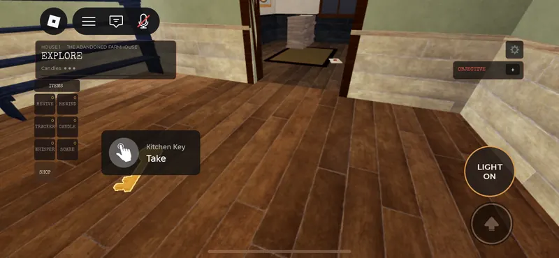
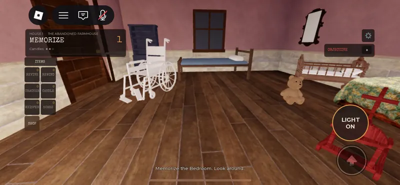
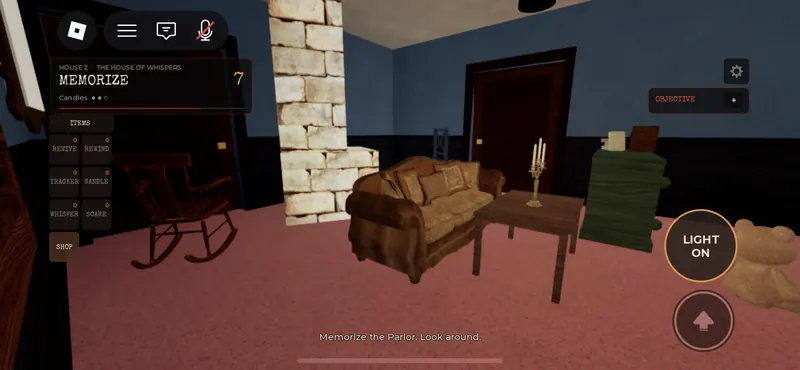
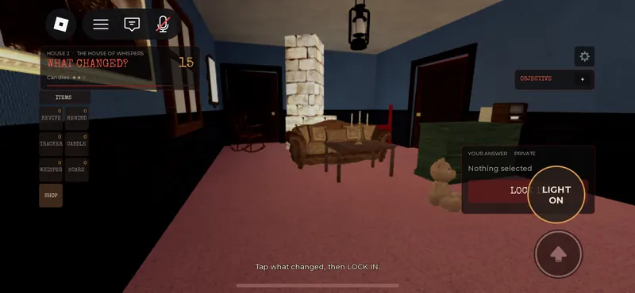
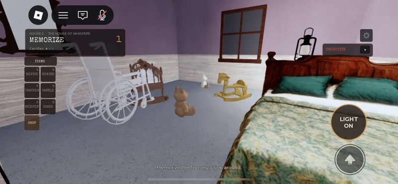
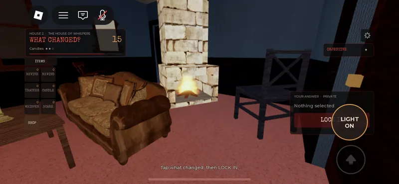

Roblox game · Published
Haunting Mother
A multiplayer horror memory game. Study every room, then spot what changed.
Haunting Mother is a multiplayer horror puzzle game on Roblox. Players explore three haunted houses, memorize each room against the clock, then have to spot what changed. Best played with friends, in the dark, with the sound up.
Opens the experience on Roblox. You'll need a free Roblox account to play.

- Platform
- Roblox
- Genre
- Horror, puzzle, memory
- Status
- Published on Roblox
- My role
- Creator: design and development
The game
Every house plays out in three phases. Explore it and pick up what you find. Memorize a room before the timer runs out. Then come back, tap whatever changed, and lock in your answer.
In multiplayer, each player locks in a private answer, so everyone has to trust their own memory. A candle meter, power ups and a shop inside the game add pressure and strategy to each run.
- ExploreSearch the house and collect items such as keys.
- MemorizeStudy the room while the countdown runs.
- What changed?Tap the difference, then lock in your answer.
What I built
I designed the game and built it in Roblox Studio with Luau, writing and changing scripts myself and using an AI coding assistant to draft and debug, then testing every round in play sessions.
- Multiplayer rounds where each player locks in a private answer
- Three house environments, with doors and interactive objects to search
- Hunter behaviour that adds pressure while players explore
- Lobby management and match progression from house to house
- Gameplay variations so changes differ between runs
- A player interface built for touch: timers, candle meter, power ups and the shop
- Iterative testing and fixes after each play session
Design pillars
Memory is the puzzle
Players study a room, then have to notice what's different. Easy to learn, tense to master.
Every house feels different
Each house has its own look, from the farmhouse's worn timber to the Mother's red bedroom, lit by lanterns and candles.
Pressure from every side
A countdown, a candle meter and limited power ups such as Revive, Rewind and Tracker make every guess count.
Better with friends
Multiplayer rounds with private answers, so nobody can copy and every player is tested.
Built for phones too
Large touch controls and a clear HUD make it playable on mobile as well as desktop.
My contribution
Game design
Designed the loop of exploring, memorizing and spotting the change, the three houses and how difficulty builds from one to the next.
World building in Roblox Studio
Built and furnished each house and tuned its lighting for atmosphere.
Gameplay scripting
Scripted the phases, timers, answer checking, items and multiplayer behaviour in Luau, Roblox's scripting language.
Interface design
Designed the HUD: the phase card with timer and candles, item slots, the objective panel, the private answer panel and touch controls.
Testing and publishing
Playtested in Studio and published the game as a public Roblox experience.
Gameplay
Captured inside the game on a phone. Select a shot to view it full size.
House 1 · The Abandoned Farmhouse

Explore Explore
Explore
Memorize What changed?
What changed?


House 2 · The House of Whispers

Memorize
What changed?
Memorize
What changed?


House 3 · The Mother's House
 Memorize
Memorize